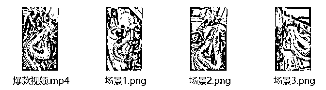
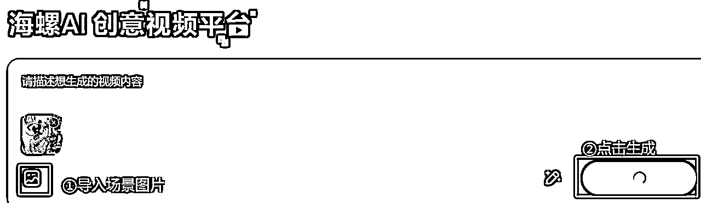
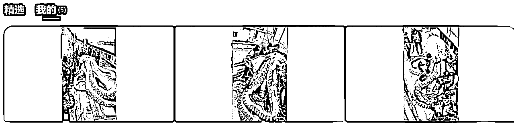
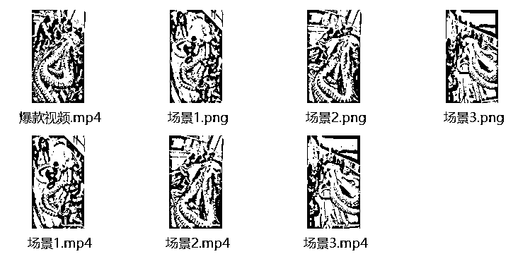
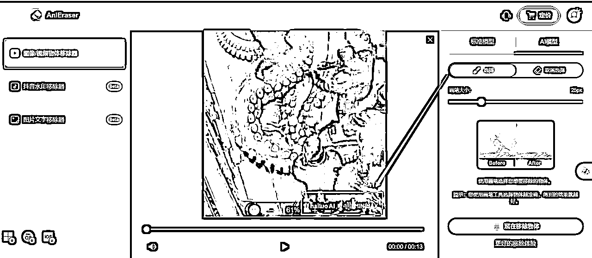
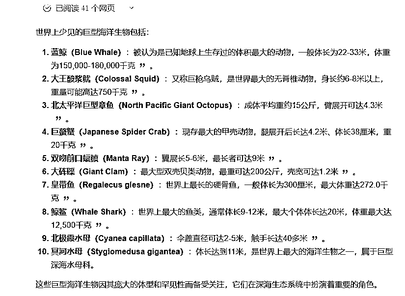
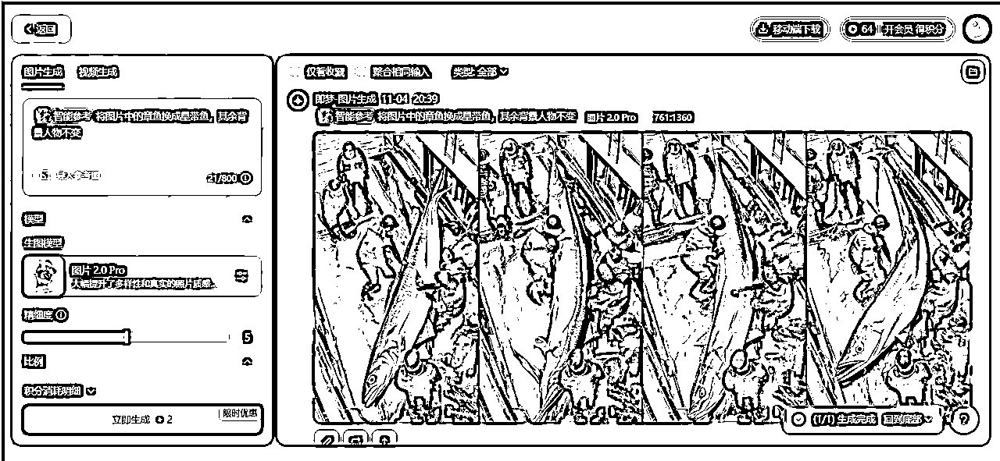
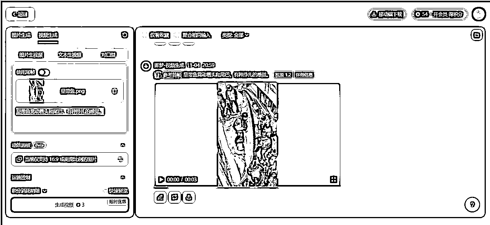
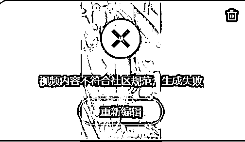

来源：https://gwlxqear42r.feishu.cn/docx/N2mwdTtvyonnSTxp7hScXw1Unhz
这周看了亦仁大大发布的Youtube超级标，感觉大有可为，于是立马开干！
周末仔细研究了一些AI频道，按照龙珠悬赏的题目，写了这篇帖子。帖子主题是围绕对标账号，如何高效1比1复刻爆款视频，并且让chatgpt帮忙制定了3个月的行动方案和计划。
第一次在生财写帖子，希望对圈友能有所帮助，也欢迎有意进入youtube掘金的圈友一起多多交流~~
账号：Deep Sea Discoveries
①爆款比例高。总共74个视频，有9个千万播放量的视频（占比12%），有25个百万播放量的视频（占比34%）；
②涨粉迅猛。频道于2024年2月1日注册，9月23日开始发布视频，2个月内订阅者人数接近40W；
③频道收益高。根据socialblade估计，该频道预计月收入$37.4K - $599.1K. 从历史播放量来看，估计该频道10月已符合YouTube合作伙伴计划要求，从第8个视频开始即可享受广告收益（这个频道的变现速度太快啦🤣）；
④低成本、生产效率高。无需露脸，视频图像和背景音乐全部可以用AI生成，独享收益（但是值得注意：爆款视频评论区已有多名观众指出视频为AI生成，并且部分视频主图有点夸张，可能后续会有负面影响，不确定是否会被限流或者取消收益）
我用RPA爬取了11月1日之前该频道所有视频的标题、观看次数、点赞数和发布日期，并和ChatGPT一起分析内容。
初步观察到该频道的爆款视频主题集中在巨型海洋生物/动物救援。
巨型海洋生物视频的主图均是罕见、巨大的海洋生物，激起了观众的好奇心和猎奇欲，常用的话题标签是：#GiantSeaCreatures #FishingDiscoveries #OceanMysteries
动物救援视频的主图是人类帮助极地动物（北极熊、企鹅）的场景，评论区主要是称赞人类的善行和对极地动物的珍惜，常用的话题标签是：#WildlifeConservation #ArcticAnimals
因此，如果我要做类似的账号，第一批选题可能是：
我选择复刻播放量最高的视频，视频是巨型章鱼被捕捞到渔船上处理的场景。总共12秒，由3段场景拼接而成。
复刻过程中使用的工具有Youtube视频下载工具、AI视频生成工具（海螺AI、即梦）、剪辑工具（剪映）、视频水印去除工具（万兴优转），接下来是视频复刻过程：
下载Youtube视频，并且将视频中出现的3段场景截图保存，并且按照场景的出现顺序标记图片（欢迎圈友推荐更加简洁好用的YouTube视频下载工具🙌）

将图片逐个导入海螺AI，生成3个场景的视频。目前国内用户可以免费使用海螺AI，但是用提示词生成视频需要排队，排队的人越来越多，至少也要等好几个小时，所以我直接用图片生成视频，就无需排队，3分钟左右即可。


海螺AI真的值得夸夸：生成的视频还原度非常高，几乎和源视频一模一样！附上官方教程

将3段视频上传到剪映合成。左边是源视频，右边是我生成的视频，你们觉得有几分相似？
由于海螺AI生成的视频是带有水印的，所以还要用工具去水印。我目前用的是万兴优转，选择去水印区域移除即可，去除效果一般，后面两个场景还是有水印，而且免费额度有限制，后续还要寻找更好用的去水印工具，欢迎圈友推荐👀 最后，大家可以瞅瞅导出的无水印视频VS源视频对比👇

没想到这篇帖子得到了亦仁大大的点赞，并且收获了一个好问题：“在这个复刻的基础上，有什么微创新的想法没？比如，把鱿鱼换成其他的？”
这个好办，把图片中的主体换成其他巨型海洋生物即可！于是，我去问了kimi：世界上有哪些少见的巨型海洋生物？kimi给我提供了10个答案。

我选择皇带鱼作为替换主体，输入指令：将图片中的章鱼换成皇带鱼，其余背景人物不变。
用的AI生图工具是即梦，它的好处在于可以生成4张图片供参考，还可以选择喜欢的生成图做进一步的微调。左侧还有调整精细度的选项（但是使用下来，个人感觉：精细度越高，生成的图片AI感反而更重）
目前普通用户每日登录即可获得66个免费积分，图片生成一次要扣2个积分。

即梦也有视频生成的功能，视频生成一次要扣3个积分。

于是我用同样的图片+提示词，借机对比了即梦和海螺的视频生成效果。没想到，即梦生成的视频中规中矩，反倒是暴露了海螺的缺点：不稳定。
在海螺用同样的图片+提示词生成视频，竟然在第2秒换了水中的场景。我想应该是因为我加了提示词，之前的图生视频都是只有图片，于是我就按照之前的方式只传了图片，结果又提示：视频内容不符合社区规范，生成失败😅

可能这正应了清华人工智能学院沈阳教授的话：你能驾驭AI，AI生成的内容体现的是你的想象力和确定性。你不能驾驭AI，AI生成的内容体现的是它的想象力和不确定性。
我通过对标频道的视频标签和主题，来寻找类似的频道，并且用RPA爬取了基本的频道信息，再去socialblade查看预测频道的月收入，整理出了10个类似频道的信息。如果圈友还想研究得更细，可以用RPA逐个爬取频道的视频信息来分析。目前已经出现多个模仿Deep Sea Discoveries的频道，并且短期涨粉也很快。
经过这番分析，我感觉YouTube值得入场。一些千粉的频道都能跑出百万级别的视频，有些视频质量不咋地也有好几万播放量。而且Youtube的盘子够大，用户数量有二十几亿，新手小白如果认真干，比别人多想一点、多做一点，也是能吃到一些红利的。接下来就是行动啦！开干！